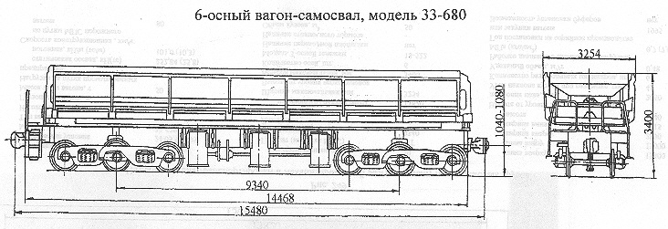

Назначение: для транспортировки и механизированной разгрузки сыпучих и кусковых грузов
Параметры
| Номер проекта | 680.00.000 |
| Технические условия | 24.05.974-95 |
| Модель вагона | 33-680 |
| Тип вагона | |
| Изготовитель | АО "ЗМК" г. Энгельс |
| Грузоподъемность, т | 105 |
| Масса тары вагона, т | 50,8 |
| Нагрузка: статическая осевая на путях промышленных предприятий, кН(тс) |
254,4(25,96) |
| погонная, кН/м(тс/м) на путях промышленных предприятих | 98,59(10,06) |
| Скорость конструкционная, км/ч: по путям МПС порожнего вагона |
80 |
| Скорость конструкционная на промышленных путях, км/ч | 70 |
| Габарит (на путях МПС) | 1-Т |
| База вагона, мм | 9340 |
| Длина, мм: по осям сцепления автосцепок |
15480 |
| по концевым балкам рамы | 14468 |
| Ширина максимальная, мм | 3254 |
| Высота от уровня верха головок рельсов максимальная, мм | 3400 |
| Количество осей, шт. | 6 |
| Модель 3-осной тележки | 18-522 |
| Наличие переходной площадки | есть |
| Наличие стояночного тормоза | |
| Объем кузова, м3 | 50 |
| Размеры кузова внутри, мм: длина вверху |
13400 |
| длина внизу | 13000 |
| ширина вверху | 2890 |
| ширина внизу | 2715 |
| высота | 1340 |
| Высота от уровня верха головок рельсов до уровня пола, мм | 2060 |
| Угол наклона кузова при разгрузке, град | 45 |
| Количество разгрузочных цилиндров, шт. | 6 |
| Удельный объем, м3/т | 0,48 |
| Рабочее давление в цилиндрах разгрузки, МПа(кгс/см2) | 0,7(7,0) |
| Год постановки на серийное производство или закупки вагона | 1995 |
| Возможность установки буфера | нет |